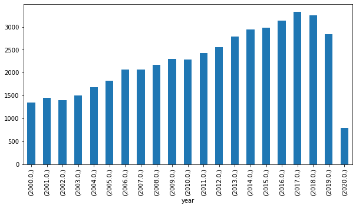

Data Science Foundations, Lab 1: Data Hunt I¶
Instructor: Wesley Beckner
Contact: wesleybeckner@gmail.com
That's right you heard correctly. It's a data hunt.
import pandas as pd
import matplotlib.pyplot as plt
import seaborn as sns
from ipywidgets import interact
df = pd.read_csv("https://raw.githubusercontent.com/wesleybeckner/"\
"technology_explorers/main/assets/imdb_movies.csv")
# converting years to numbers for easy conditionals
df['year'] = pd.to_numeric(df['year'], errors='coerce')
df.shape
/home/wbeckner/anaconda3/envs/py39/lib/python3.9/site-packages/IPython/core/interactiveshell.py:3251: DtypeWarning: Columns (3) have mixed types.Specify dtype option on import or set low_memory=False.
exec(code_obj, self.user_global_ns, self.user_ns)
(85855, 22)
df.head(3)
| imdb_title_id | title | original_title | year | date_published | genre | duration | country | language | director | ... | actors | description | avg_vote | votes | budget | usa_gross_income | worlwide_gross_income | metascore | reviews_from_users | reviews_from_critics | |
|---|---|---|---|---|---|---|---|---|---|---|---|---|---|---|---|---|---|---|---|---|---|
| 0 | tt0000009 | Miss Jerry | Miss Jerry | 1894.0 | 1894-10-09 | Romance | 45 | USA | None | Alexander Black | ... | Blanche Bayliss, William Courtenay, Chauncey D... | The adventures of a female reporter in the 1890s. | 5.9 | 154 | NaN | NaN | NaN | NaN | 1.0 | 2.0 |
| 1 | tt0000574 | The Story of the Kelly Gang | The Story of the Kelly Gang | 1906.0 | 1906-12-26 | Biography, Crime, Drama | 70 | Australia | None | Charles Tait | ... | Elizabeth Tait, John Tait, Norman Campbell, Be... | True story of notorious Australian outlaw Ned ... | 6.1 | 589 | $ 2250 | NaN | NaN | NaN | 7.0 | 7.0 |
| 2 | tt0001892 | Den sorte drøm | Den sorte drøm | 1911.0 | 1911-08-19 | Drama | 53 | Germany, Denmark | NaN | Urban Gad | ... | Asta Nielsen, Valdemar Psilander, Gunnar Helse... | Two men of high rank are both wooing the beaut... | 5.8 | 188 | NaN | NaN | NaN | NaN | 5.0 | 2.0 |
3 rows × 22 columns
Q1 What american director has the highest mean avg_vote?¶
df.groupby('director')['avg_vote'].mean().sort_values(ascending=False)
director
Msn Surya 9.9
Aalmist Subba 9.8
Sampath Rudra 9.8
Basheed S.K. 9.8
Abner Official 9.8
...
Ramana Reddy B.V. 1.0
Tamás Gerencsér 1.0
Tommy Yu 1.0
Gökhan Gök 1.0
Yasutake Torii 1.0
Name: avg_vote, Length: 34733, dtype: float64
Q2 What american director with more than 5 movies, has the highest mean avg_vote?¶
df.groupby('director').filter(lambda x: x.shape[0] > 5).\
groupby('director')['avg_vote'].mean().sort_values(ascending=False)
director
Christopher Nolan 8.218182
Satyajit Ray 8.025000
Andrei Tarkovsky 8.014286
Hayao Miyazaki 8.008333
Sergio Leone 7.928571
...
Bill Zebub 2.483333
Mark Polonia 2.433333
Paul T.T. Easter 2.383333
Christopher Forbes 2.000000
Brett Kelly 1.533333
Name: avg_vote, Length: 3047, dtype: float64
Q3 What director has the largest variance in avg_vote?¶
df.groupby('director')['avg_vote'].std().sort_values(ascending=False)
director
Deniz Denizciler 4.030509
Rudi Lagemann 3.747666
Emilio Ruiz Barrachina 3.676955
Krishna Ghattamaneni 3.676955
Milos Avramovic 3.606245
...
Ümit Degirmenci NaN
Ümit Elçi NaN
Ümit Köreken NaN
Þorsteinn Gunnar Bjarnason NaN
Þórhildur Þorleifsdóttir NaN
Name: avg_vote, Length: 34733, dtype: float64
Q4 What director with more than 10 movies has the largest variance in avg_vote?¶
df.groupby('director').filter(lambda x: x.shape[0] > 10).\
groupby('director')['avg_vote'].std().sort_values(ascending=False)
director
Harry Baweja 1.869954
Shaji Kailas 1.854502
Zdenek Troska 1.775984
Adam Rifkin 1.711251
Ram Gopal Varma 1.687850
...
Ford Beebe 0.224343
Ray Nazarro 0.210311
Jean Grémillon 0.196946
Louis Feuillade 0.156428
Tsutomu Shibayama 0.126121
Name: avg_vote, Length: 1135, dtype: float64
Q5 What american directors with more than 5 movies have the largest variance in avg_vote?¶
df.groupby('director').filter(lambda x: x.shape[0] > 5).\
groupby('director')['avg_vote'].std().sort_values(ascending=False)
director
Jorge Ameer 2.200606
Tigran Keosayan 2.188150
Nikos Zervos 2.093243
Kundan Shah 2.060502
Feroz Khan 2.036220
...
Sang-il Lee 0.132916
Nate Watt 0.129099
Daisuke Nishio 0.127242
Tsutomu Shibayama 0.126121
Pierre Chenal 0.103280
Name: avg_vote, Length: 3047, dtype: float64
Q6 Where does M. Night Shyamalan fall on this rank scale?¶
(He's number 36/859)
var_rank = df.loc[df['country'] == 'USA'].groupby('director').filter(lambda x: x.shape[0] > 5).\
groupby('director')['avg_vote'].std().sort_values(ascending=False).reset_index()
display(var_rank.loc[var_rank['director'] == 'M. Night Shyamalan'])
print(var_rank.shape[0])
| director | avg_vote | |
|---|---|---|
| 36 | M. Night Shyamalan | 1.258791 |
859
what happens when you only include directors who, on average (based on mean), have made most their movies after 1990 and have produced 10 or more movies?
(Shyamalan rises to 3/83)
var_rank = df.loc[df['country'] == 'USA']\
.groupby('director').filter(lambda x: (x['year'].mean() > 1990) & (x.shape[0] > 9))\
.groupby('director')[['avg_vote', 'votes']].describe().sort_values(by=('avg_vote', 'std'), ascending=False)
display(var_rank.iloc[:10])
print(var_rank.shape[0])
| avg_vote | votes | |||||||||||||||
|---|---|---|---|---|---|---|---|---|---|---|---|---|---|---|---|---|
| count | mean | std | min | 25% | 50% | 75% | max | count | mean | std | min | 25% | 50% | 75% | max | |
| director | ||||||||||||||||
| Adam Rifkin | 15.0 | 5.053333 | 1.711251 | 1.3 | 4.200 | 5.80 | 6.100 | 6.9 | 15.0 | 4417.400000 | 9414.430237 | 124.0 | 525.50 | 1084.0 | 1782.50 | 34958.0 |
| Mark L. Lester | 19.0 | 4.768421 | 1.262296 | 2.3 | 4.200 | 4.70 | 5.800 | 6.7 | 19.0 | 11479.052632 | 32768.240173 | 298.0 | 549.00 | 1219.0 | 4405.50 | 143443.0 |
| M. Night Shyamalan | 10.0 | 5.970000 | 1.258791 | 4.0 | 4.975 | 6.05 | 6.650 | 8.1 | 10.0 | 239264.500000 | 262079.154005 | 731.0 | 97982.50 | 169426.0 | 308493.25 | 894385.0 |
| Sean McNamara | 12.0 | 5.216667 | 1.252513 | 2.9 | 4.725 | 5.60 | 5.950 | 7.0 | 12.0 | 9221.166667 | 13933.853515 | 365.0 | 1085.25 | 1416.0 | 12191.50 | 44808.0 |
| Sam Firstenberg | 10.0 | 4.550000 | 1.174970 | 2.8 | 3.475 | 4.85 | 5.325 | 6.2 | 10.0 | 1890.400000 | 1552.704107 | 153.0 | 713.50 | 1282.0 | 3317.25 | 4330.0 |
| Gus Van Sant | 12.0 | 6.583333 | 1.169952 | 4.4 | 6.025 | 6.95 | 7.300 | 8.3 | 12.0 | 112868.166667 | 232569.906962 | 3674.0 | 16191.75 | 38458.5 | 82270.25 | 837379.0 |
| John Lyde | 16.0 | 4.937500 | 1.159813 | 3.6 | 3.900 | 4.80 | 5.500 | 7.0 | 16.0 | 1021.937500 | 911.075516 | 113.0 | 409.50 | 802.0 | 1360.00 | 3270.0 |
| Michael Polish | 12.0 | 5.458333 | 1.154011 | 3.4 | 4.700 | 5.45 | 6.300 | 7.2 | 12.0 | 4396.833333 | 5662.740034 | 528.0 | 1698.75 | 3395.5 | 3624.00 | 21873.0 |
| Randal Kleiser | 12.0 | 5.708333 | 1.126102 | 3.5 | 5.050 | 5.60 | 6.750 | 7.2 | 12.0 | 35908.916667 | 65204.420315 | 1030.0 | 2458.75 | 11245.5 | 41162.50 | 232940.0 |
| Brian Brough | 12.0 | 5.575000 | 1.096378 | 3.5 | 5.225 | 5.80 | 6.350 | 7.0 | 12.0 | 675.500000 | 590.071721 | 104.0 | 134.00 | 606.5 | 1048.75 | 1842.0 |
83
var_rank = df.loc[df['country'] == 'USA']\
.groupby('director').filter(lambda x: (x['avg_vote'].max() > 8) & (x['votes'].mean() > 1e3) & (x.shape[0] > 2))\
.groupby('director')[['avg_vote', 'votes']].describe().sort_values(by=('avg_vote', 'std'), ascending=False)
display(var_rank.iloc[:10])
print(var_rank.shape[0])
| avg_vote | votes | |||||||||||||||
|---|---|---|---|---|---|---|---|---|---|---|---|---|---|---|---|---|
| count | mean | std | min | 25% | 50% | 75% | max | count | mean | std | min | 25% | 50% | 75% | max | |
| director | ||||||||||||||||
| Peter Bogdanovich | 13.0 | 6.446154 | 1.564510 | 2.9 | 6.000 | 7.00 | 7.600 | 8.1 | 13.0 | 12023.307692 | 1.510756e+04 | 870.0 | 1262.00 | 2426.0 | 19253.00 | 41283.0 |
| Francis Ford Coppola | 18.0 | 6.777778 | 1.444077 | 3.1 | 6.225 | 6.65 | 7.550 | 9.2 | 18.0 | 226387.555556 | 4.392702e+05 | 199.0 | 5078.25 | 23681.5 | 164311.25 | 1572674.0 |
| Richard Marquand | 5.0 | 6.320000 | 1.375500 | 4.5 | 5.800 | 6.50 | 6.500 | 8.3 | 5.0 | 188499.800000 | 4.134480e+05 | 411.0 | 560.00 | 598.0 | 12894.00 | 928036.0 |
| Curtis Hanson | 6.0 | 6.150000 | 1.361984 | 4.3 | 5.350 | 6.40 | 6.550 | 8.2 | 6.0 | 100734.333333 | 2.069594e+05 | 209.0 | 1345.00 | 20931.0 | 39724.25 | 521530.0 |
| Sean Penn | 4.0 | 6.525000 | 1.322561 | 4.9 | 5.950 | 6.55 | 7.125 | 8.1 | 4.0 | 157547.000000 | 2.695851e+05 | 4409.0 | 10514.00 | 32543.5 | 179576.50 | 560692.0 |
| Timothy A. Chey | 6.0 | 6.250000 | 1.291124 | 4.4 | 5.775 | 6.05 | 6.850 | 8.2 | 6.0 | 1447.500000 | 5.878295e+02 | 788.0 | 923.50 | 1510.5 | 1812.50 | 2235.0 |
| M. Night Shyamalan | 10.0 | 5.970000 | 1.258791 | 4.0 | 4.975 | 6.05 | 6.650 | 8.1 | 10.0 | 239264.500000 | 2.620792e+05 | 731.0 | 97982.50 | 169426.0 | 308493.25 | 894385.0 |
| Stanley Kubrick | 5.0 | 7.280000 | 1.202913 | 5.5 | 6.600 | 7.90 | 8.000 | 8.4 | 5.0 | 80954.400000 | 6.855686e+04 | 9649.0 | 20806.00 | 79652.0 | 121994.00 | 172671.0 |
| Gus Van Sant | 12.0 | 6.583333 | 1.169952 | 4.4 | 6.025 | 6.95 | 7.300 | 8.3 | 12.0 | 112868.166667 | 2.325699e+05 | 3674.0 | 16191.75 | 38458.5 | 82270.25 | 837379.0 |
| Frank Darabont | 4.0 | 7.975000 | 1.164403 | 6.9 | 7.050 | 7.85 | 8.775 | 9.3 | 4.0 | 929718.000000 | 1.008586e+06 | 51763.0 | 219886.75 | 694132.0 | 1403963.25 | 2278845.0 |
66
Q7 How many movies were made each year in US from 2000-2020¶
df.loc[(df['year'] >= 2000) & (df['year'] <= 2020)][['year']].value_counts(sort=False)
year
2000.0 1345
2001.0 1447
2002.0 1405
2003.0 1496
2004.0 1681
2005.0 1827
2006.0 2063
2007.0 2074
2008.0 2175
2009.0 2298
2010.0 2281
2011.0 2429
2012.0 2560
2013.0 2783
2014.0 2942
2015.0 2977
2016.0 3138
2017.0 3329
2018.0 3257
2019.0 2841
2020.0 789
dtype: int64
Q8 Visualize The Results of Q7!¶
fig, ax = plt.subplots(figsize=(10,5))
df.loc[(df['year'] >= 2000) & (df['year'] <= 2020)][['year']].value_counts(sort=False).plot(kind='bar', ax=ax)
<AxesSubplot:xlabel='year'>

Q9 For single country movies, how many movies were made each year in each country from 2000-2020, only include countries that made more than 1000 movies in that timeframe¶
df.loc[(df['year'] >= 2000) & (df['year'] <= 2020) & (~df['country'].str.contains(',', na=False))]\
.groupby('country').filter(lambda x: x.shape[0] > 1000)\
.groupby(['country', 'year'])[['title']].count().reset_index()
| country | year | title | |
|---|---|---|---|
| 0 | Canada | 2000.0 | 39 |
| 1 | Canada | 2001.0 | 51 |
| 2 | Canada | 2002.0 | 49 |
| 3 | Canada | 2003.0 | 38 |
| 4 | Canada | 2004.0 | 52 |
| ... | ... | ... | ... |
| 163 | USA | 2016.0 | 869 |
| 164 | USA | 2017.0 | 905 |
| 165 | USA | 2018.0 | 886 |
| 166 | USA | 2019.0 | 700 |
| 167 | USA | 2020.0 | 276 |
168 rows × 3 columns
Q10 Visualize the results from Q9!¶
fig, ax = plt.subplots(figsize=(10,10))
countries = df.loc[(df['year'] >= 2000) & (df['year'] <= 2020) & (~df['country'].str.contains(',', na=False))]\
.groupby('country').filter(lambda x: x.shape[0] > 1000)\
.groupby(['country', 'year'])[['title']].count().reset_index()
for country in countries.groupby('country'):
country[1].plot(x='year', y='title', ax=ax, label=country[0])